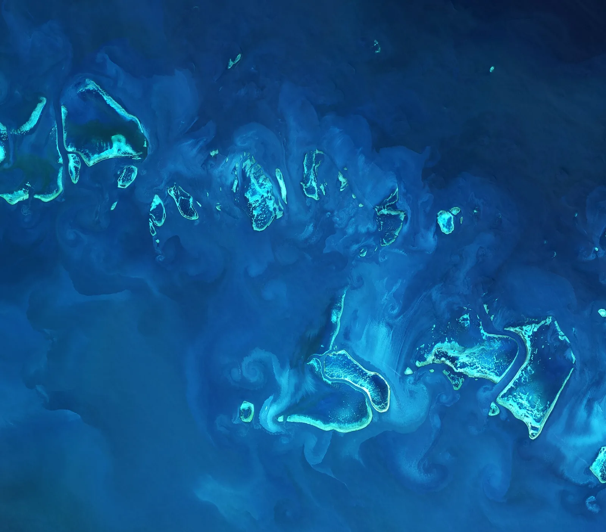
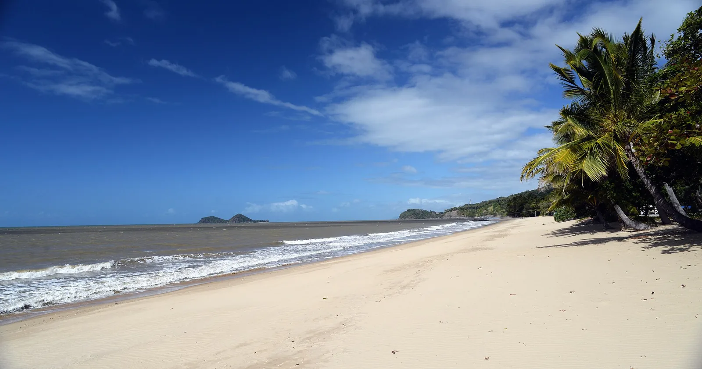

S12 · Sur
S12 · Süden
S12 · South
Gran Barrera de Coral
Y seguí hasta Australia. Vi la Gran Barrera de Coral: más de dos mil kilómetros construidos por animales más chicos que una uña.
Und ich flog weiter bis Australien. Ich sah das Große Barriereriff: über zweitausend Kilometer, gebaut von Tieren, kleiner als ein Fingernagel.
And I went on to Australia. I saw the Great Barrier Reef: more than two thousand kilometres built by animals smaller than a fingernail.
Información
La Gran Barrera de Coral es el sistema arrecifal más extenso del mundo. Se inscribió casi entero como Patrimonio Mundial en 1981: 348.000 kilómetros cuadrados que se estiran 14 grados de latitud por la costa noreste de Australia y llegan hasta 250 kilómetros mar adentro.
Reúne 400 tipos de coral, 1.500 especies de peces y 4.000 de moluscos. Es también el hábitat del dugongo y de la tortuga verde, las dos amenazadas de extinción.
Information
La Gran Barrera de Coral es el sistema arrecifal más extenso del mundo. Se inscribió casi entero como Patrimonio Mundial en 1981: 348.000 kilómetros cuadrados que se estiran 14 grados de latitud por la costa noreste de Australia y llegan hasta 250 kilómetros mar adentro.
Reúne 400 tipos de coral, 1.500 especies de peces y 4.000 de moluscos. Es también el hábitat del dugongo y de la tortuga verde, las dos amenazadas de extinción.
Information
La Gran Barrera de Coral es el sistema arrecifal más extenso del mundo. Se inscribió casi entero como Patrimonio Mundial en 1981: 348.000 kilómetros cuadrados que se estiran 14 grados de latitud por la costa noreste de Australia y llegan hasta 250 kilómetros mar adentro.
Reúne 400 tipos de coral, 1.500 especies de peces y 4.000 de moluscos. Es también el hábitat del dugongo y de la tortuga verde, las dos amenazadas de extinción.
Vi la Gran Barrera de Coral ponerse blanca como un hueso, cinco veces en ocho años.
Ich sah das Große Barriereriff weiß werden wie ein Knochen, fünfmal in acht Jahren.
I saw the Great Barrier Reef turn white as bone, five times in eight years.
Desde 2016 la Gran Barrera atravesó cinco blanqueos masivos: 2016, 2017, 2020, 2022 y 2024. El de 2016 mató al menos la mitad de los corales constructores de aguas someras. El de 2022 fue el primero registrado en condiciones de La Niña, que suelen ser más frescas.
Entre enero y marzo de 2024, el mar del Coral registró el calor más alto de los últimos cuatrocientos años.
Desde 2016 la Gran Barrera atravesó cinco blanqueos masivos: 2016, 2017, 2020, 2022 y 2024. El de 2016 mató al menos la mitad de los corales constructores de aguas someras. El de 2022 fue el primero registrado en condiciones de La Niña, que suelen ser más frescas.
Entre enero y marzo de 2024, el mar del Coral registró el calor más alto de los últimos cuatrocientos años.
Desde 2016 la Gran Barrera atravesó cinco blanqueos masivos: 2016, 2017, 2020, 2022 y 2024. El de 2016 mató al menos la mitad de los corales constructores de aguas someras. El de 2022 fue el primero registrado en condiciones de La Niña, que suelen ser más frescas.
Entre enero y marzo de 2024, el mar del Coral registró el calor más alto de los últimos cuatrocientos años.
Galería
Galerie
Gallery



Fuentes
Quellen
Sources
- UNESCO, Centro del Patrimonio Mundial, Great Barrier Reef — https://whc.unesco.org/en/list/154/ consultado 2026-10-05abgerufen 2026-10-05accessed 2026-10-05
- Australian Institute of Marine Science (AIMS), Aerial surveys reveal mass coral bleaching event unfolding on the Great Barrier Reef — https://www.aims.gov.au/information-centre/news-and-stories/aerial-surveys-reveal-mass-coral-bleaching-event-unfolding-great-barrier-reef consultado 2026-10-05abgerufen 2026-10-05accessed 2026-10-05
- Nature, Highest ocean heat in four centuries places Great Barrier Reef in danger (doi:10.1038/s41586-024-07672-x) — https://www.nature.com/articles/s41586-024-07672-x consultado 2026-10-05abgerufen 2026-10-05accessed 2026-10-05